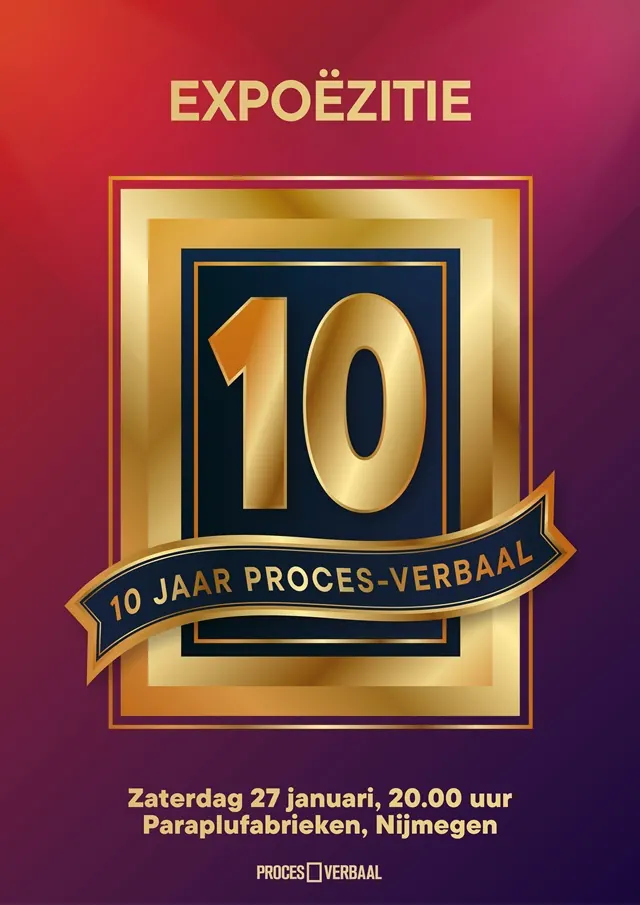

Nieuws ·
Jubileumviering: Tien Jaar Proces-Verbaal, Een Decennium van Dichtkunst

Proces-Verbaal, de uitgeverij en productiehuis dat een decennium geleden begon als een droom, viert dit jaar haar tienjarige bestaan. Opgericht in 2014, heeft Proces-Verbaal zich ontwikkeld tot een belangrijke speler in de literaire wereld, bekend om zijn avant-gardistische benadering van literatuur.
Feest bij Proces-Verbaal
Het jubileum wordt feestelijk ingeluid tijdens de Poëzieweek 2024 met een speciaal evenement in de Paraplufabrieken in Nijmegen. Dit bijzondere moment wordt op zaterdag 27 januari om 20:30 uur ingeluid door Noël Vergunst, de Nijmeegse wethouder van cultuur. Vervolgens leiden oprichters Maurits Verhoef en Jasper Serraris het publiek door een avond vol poëtische optredens en persoonlijke anekdotes, waarbij de rijke geschiedenis en diversiteit van Proces-Verbaal wordt gevierd. Het hoogtepunt van de avond is de presentatie van Yanaika Zomer’s debuutbundel ‘U heeft nog 43 ongelezen gedichten’.
Proces-Verbaal staat bekend om zijn unieke benadering van poëzie, waarbij dichters volledige creatieve controle behouden. Deze benadering heeft geleid tot een dynamische interactie tussen poëzie en andere kunstvormen. In de afgelopen tien jaar heeft Proces-Verbaal opgetreden op grote festivals zoals Oerol, Lowlands, Hongerige Wolf, Ruigoord en Zwarte Cross, en heeft het naam gemaakt met innovatieve poëzieproducties zoals de Poëzie Centrale, waar festivalbezoekers via ouderwetse telefoons gedichten konden ontvangen van dichters.
De viering van dit jubileum vindt plaats in de Paraplufabrieken, gelegen aan de Van Oldenbarneveltstraat 63-A in Nijmegen. Bezoekers zijn welkom vanaf 20:00 uur op zaterdag 27 januari voor een avond die in het teken staat van poëtische vernieuwing en viering.”